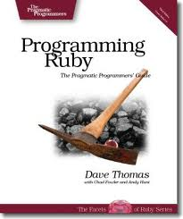
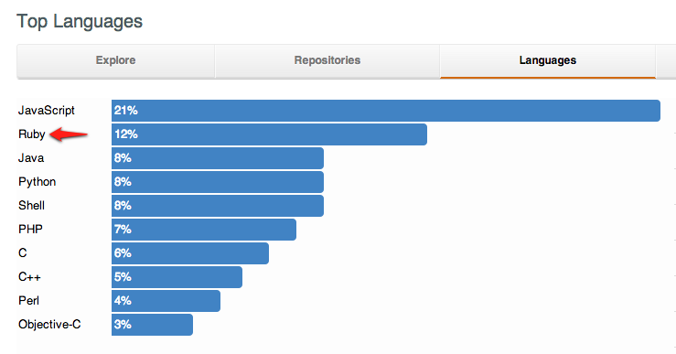
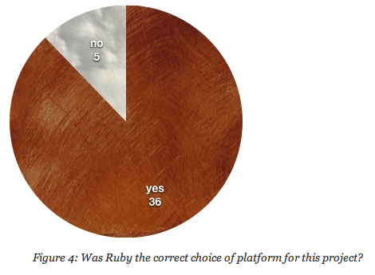
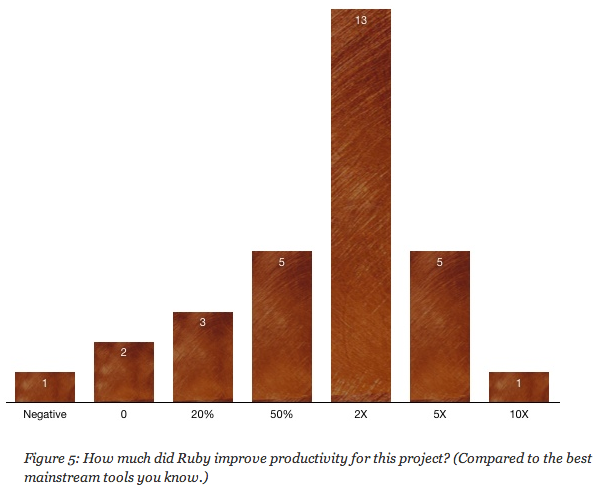
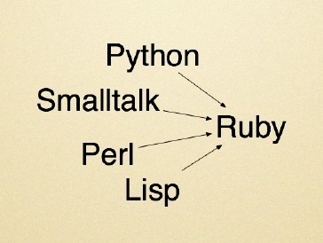

Tayfun Biyikoglu
Application Architect
IT - ADD
Timeline: 1993 to 2000
- Created in 1993 by Yukihiro "Matz" Matsumoto
- Was popular in Japan but unknown else where
- All documentation is written in japanese
Timeline: 2000 to 2004
-

- First English language book published in 2000
- A lot of interest in the agile development community
- Most of the writers of Agile manifesto are Rubyists
(Martin Fowler, Robert C. Martin, Dave Thomas, Andrew Hunt)
Timeline: 2004 to today
- The Ruby On Rails framework made Ruby popular
- Amazon, BBC, Cisco, CNET, IBM, JP Morgan, NASA, Yahoo and Apple
- Scribd (70 million readers each month)
- Groupon (38.5 million subscribers in North America)
- Basecamp (millions of users)
- Github (3 millions users, 5 millions repositories)

Marketing Before Technical Stuff
Marketing Before Technical Stuff
Marketing Before Technical Stuff
Ruby Language
A dynamic, open source programming language with a focus on simplicity and productivity and developer happiness. It has an elegant syntax that is natural to read and easy to write.
I always thought Smalltalk would beat Java. I just didn't know if would be called 'Ruby' when it did so.Kent Back
Similarities with Java
- Runs on a virtual machine
- Is Garbage collected
- is object oriented
Differences with Java
- Everything is an object
string = String.valueOf(1);
string = 1.to_s()
- Paranthesess are optional
string = 1.to_s
puts "Tayfun"
#Method definition
def greet name
puts "Hello #{name}"
end
#Method calling
greet "Tayfun"
Differences with Java
- Many things you would expect to be keywords are actually methods
throw new IllegalArgumentException("Ooops")
raise TypeError.new("Ooops")
Interactive Ruby Shell (a REPL)
irb --simple-promt
1+2
puts "Tayfun"
def multiple_by_2(param)
param * 2
end
multiple_by_2(5)
Everything is an object
1.class
1+2 == 1.+(2)
"foo".class
nil.class
true.class
String.class
Everything is an expression
x = y = z = 5
[ 3, 1, 7, 0 ].sort.reverse
a = (b = 1 + 2) + 3
account_type = "01"
account_name = if account_type == "01"
"Current Account"
else
"Term Deposit"
end
puts account_name
Duck Typing in its Nature
if it walks like a duck and quacks like a duck, it must be a duck.
def add_bar(parameter)
parameter << "bar"
end
param = ['foo']
add_bar param
p param
param = "foo"
add_bar param
p param
def add_bar(parameter)
parameter << "bar"
end
param = ['foo']
add_bar param
p param
param = "foo"
add_bar param
p param
Literal notation everywhere
Array
List<String> list = new ArrayList<String>();
list.add("foo");
list.add("bar");
list = Array.new
list << 'foo'
list << 'bar'
list = ['foo','bar', 1, true]
list = %w(foo bar)
Literal notation everywhere
Hash
Map<String,String> map = new HashMap<String,String>();
map.put("foo","one");
map.put("bar","two");
map = {'foo' => 'one', 'bar' => 'two'}
map = {foo: 'one', bar: 'two'}
Literal notation everywhere
Regular Expressions
Pattern pattern = Pattern.compile("some regular expressions")
Matcher matcher = pattern.matcher(line);
if(matcher.matches()){
doSomething()
}
doSomething() if line =~ /some regular expression/
String Interpolation
num_of_books = 2
puts 'I own ' + num_of_books.to_s + ' books.'
num_of_books = 2
puts "I own #{num_of_books} books."
4.times { |i| puts "Happy Birthday #{i == 2 ? "dear NAME" : "to You"}" }
4.times { |i| puts "Happy Birthday #{i == 2 ? "dear NAME" : "to You"}" }
Default Arguments
def greatest_club(param = "Besiktas")
puts "En buyuk #{param}"
end
greatest_club
greatest_club "Galatasaray"
def greatest_club(param = "Besiktas")
puts "En buyuk #{param}"
end
greatest_club
greatest_club "Galatasaray"
def greates_clubs(p1 = "Besiktas", *others)
print "En buyuk #{p1} "
if others.empty?
puts "baska buyuk yok"
else
puts "Sonra : #{others.join(', ')}"
end
end
greates_clubs
greates_clubs "BJK","Galatasaray","Fenerbahce"
def greates_clubs(p1 = "Besiktas", *others)
print "En buyuk #{p1} "
if others.empty?
puts "baska buyuk yok"
else
puts "Sonra : #{others.join(', ')}"
end
end
greates_clubs
greates_clubs "BJK","Galatasaray","Fenerbahce"
No overflow in Ruby
number = 1000
4.times do
puts "#{number.class}: #{number}"
number = number * number
end
number = 1000
4.times do
puts "#{number.class}: #{number}"
number = number * number
end
Ranges
A range is an object with a start point and an end point.
puts (1..5).class
a = (1..50)
p a.first
p a.end
b = "abc".."def"
p ('a'..'z').to_a
puts (1..5).class
a = (1..50)
p a.first
p a.end
b = "abc".."def"
p ('a'..'z').to_a
Closures / Blocks
A closure is a function or reference to a function together with a referencing environment of that function.
A closure—unlike a plain function pointer—allows a function to access those non-local variables even when invoked outside of its immediate lexical scope.
Closures / Blocks
def n_times(n)
lambda { |val| n * val }
end
two_times = n_times(2)
three_times = n_times(3)
puts two_times.call(3)
puts three_times.call(3)
def n_times(n)
lambda { |val| n * val }
end
two_times = n_times(2)
three_times = n_times(3)
puts two_times.call(3)
puts three_times.call(3)
Why are Closures important
- Presence of closures in a language completely changes the design of the libraries
- Closure based libraries generally result in significantly less code
Challenge: Programmer's Taboo
Cenk
Sivok Escude Hilbert Emre
Niang Holosko Oguzhan Veli Olcay
Mustafa
Sort each line in alphabetic order
Cenk
Emre Escude Hilbert Sivok
Holosko Oguzhan Olcay Niang Veli
Mustafa
Here is the taboo part
Below words are forbidden
- Stackoverflow
- Documentation
- Internet
And let's do it in 7 minutes
Any Volunteers?
Solution
List<String[]> lines = new ArrayList<String[]>();
BufferedReader reader = null;
String line;
try {
reader = new BufferedReader(new FileReader("BJK.txt"));
while ((line = reader.readLine()) != null) {
lines.add(line.split(" "));
}
}
finally{
if(reader != null){
reader.close();
}
}
Iterator it = lines.iterator();
while (it.hasNext()) {
String[] names = (String[]) it.next();
Arrays.sort(names);
}
//write back to file
BufferedWriter writer = null;
try{
writer = new BufferedWriter(new FileWriter("BJK_Sorted.txt"));
StringBuffer bf = new StringBuffer();
for (String[] strings : lines ) {
for (String s : Arrays.asList(strings)){
bf.append(s + "\t");
}
bf.append("\n");
}
writer.write(bf.toString());
}
finally{
if(writer != null){
writer.close();
}
}
List lines = new ArrayList();
BufferedReader reader = null;
String line;
try {
reader = new BufferedReader(new FileReader("BJK.txt"));
while ((line = reader.readLine()) != null) {
lines.add(line.split(" "));
}
}
finally{
if(reader != null){
reader.close();
}
}
Iterator it = lines.iterator();
while (it.hasNext()) {
String[] names = (String[]) it.next();
Arrays.sort(names);
}
//write back to file
BufferedWriter writer = null;
try{
writer = new BufferedWriter(new FileWriter("BJK_Sorted.txt"));
StringBuffer bf = new StringBuffer();
for (String[] strings : lines ) {
for (String s : Arrays.asList(strings))
{
bf.append(s + "\t");
}
bf.append("\n");
}
writer.write(bf.toString());
}
finally{
if(writer != null){
writer.close();
}
}
lines = []
File.foreach('BJK.txt') do |line|
lines << line.split
end
File.open('BJK_sorted.txt','w') do |file|
lines.each do |line|
file.puts line.sort.join(' ')
end
end
Open Classes
class StringUtils
def self.encrypt(str)
str.tr('a-y','b-z')
end
end
puts StringUtils.encrypt("tayfun")
class String
def encrypt
self.tr('a-y','b-z')
end
end
puts "tayfun".encrypt
class String
def encrypt
self.tr('a-y','b-z')
end
end
puts "tayfun".encrypt
Modules
Modules are a way of grouping together methods, classes, and constants.
Modules give you two major benefits:
- Modules provide a namespace and prevent name clashes.
- Modules support the mixin facility.
module XML
class Document
end
end
module PDF
class Document
end
end
pdf_document = PDF::Document.new
xml_document = XML::Document.new
module XML
class Document
end
end
module PDF
class Document
end
end
pdf_document = PDF::Document.new
xml_document = XML::Document.new
Modules - Mixins
Mixins is a way of behaviour sharing
module Persistable
def self.included(klass)
klass.extend ClassMethods
end
def save
puts "in save, self is #{self}"
end
module ClassMethods
def find
puts "in find"
new
end
end
end
class Person
include Persistable
end
def self.included(klass)
klass.extend ClassMethods
end
def save
puts "in save, self is #{self}"
end
module ClassMethods
def find
puts "in find"
new
end
end
end
class Person
include Persistable
end
Domain Specific Languages
class Turtle
def initialize
@path = []
end
def right(n=1)
@path << "r" * n
end
def up(n=1)
@path << "u" * n
end
def left(n=1)
@path << "l" * n
end
def down(n=1)
@path << "d" * n
end
def path
@path.join('-')
end
end
class Turtle
def initialize
@path = []
end
def right(n=1)
@path << "r" * n
end
def up(n=1)
@path << "u" * n
end
def left(n=1)
@path << "l" * n
end
def down(n=1)
@path << "d" * n
end
def path
@path.join('-')
end
end
#Usage
t = Turtle.new
t.right 3
t.left
t.up 4
t.down 2
puts t.path
Ruby Gems - Centralized Package management
RubyGems is a package manager for the Ruby that provides a standard format for distributing Ruby programs and libraries(gems), a tool designed to easily manage the installation of gems, and a server for distributing them.
gem install nokogiri
gem list
gem search STRING --remote
Ruby Gems - Bundler
Bundler maintains a consistent environment for ruby applications. It tracks an application's code and the rubygems it needs to run, so that an application will always have the exact gems (and versions) that it needs to run.
Gemfile
source 'https://rubygems.org'
gem 'nokogiri'
gem 'rack', '~>1.1'
gem 'rspec', :require => 'spec'